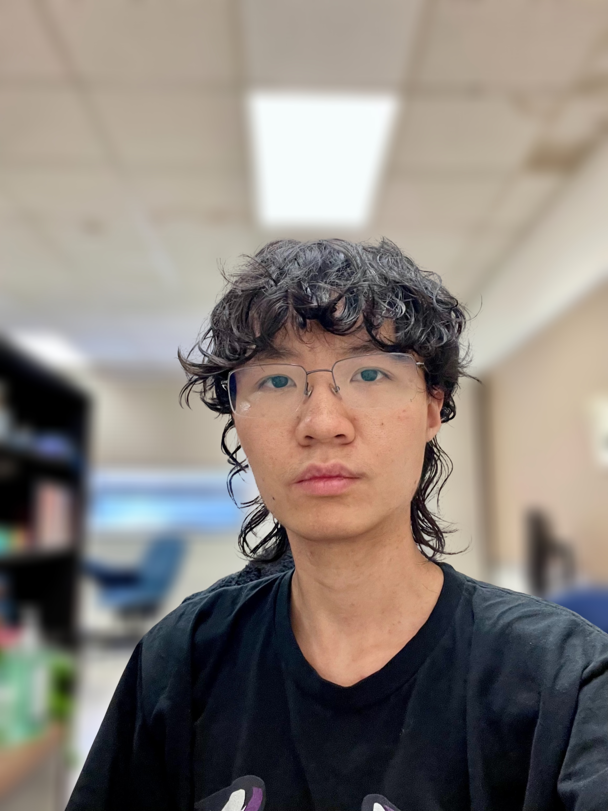

Rui Huang
PhD Candidate · Computational Physics
I am a 5th-year PhD candidate in the Department of Physics and Astronomy at University of Iowa, advised by Prof. Gregory Howes. My research diagnoses collisionless interactions between electromagnetic fields and plasma particles, focusing on energy transport, plasma heating, and particle acceleration.
I have worked with data from gyrokinetic and particle-in-cell (PIC) simulations as well as spacecraft observations. I am also interested in computational plasma physics, numerical methods for kinetic equations, and scientific machine learning.
Beyond research, I enjoy solving twisty puzzles (mostly Rubik’s Cubes), creating data visualizations (mainly with Manim), and collecting interesting puzzles in mathematics, physics, and programming.

Research.
My work focuses on developing diagnostics and methods to identify wave–particle interactions and energization pathways in weakly collisional plasmas. Below are the main threads of my research.
Resonant wave–particle interactions
Characterizing velocity-space structures associated with resonant damping (Landau damping, transit-time damping, and cyclotron damping).
Turbulent energization & particle acceleration
Diagnosing ion and electron energization mechanisms in three-dimensional kinetic simulations.
Data-driven plasma physics
Applying symbolic regression and scientific machine learning to derive interpretable plasma-heating scalings and accelerate discovery from simulation and spacecraft datasets.
Selected Publications.
-
2025
Unveiling the velocity-space signature of ion cyclotron damping using Liouville mapping
Physics of Plasmas, 32(12) (2025) · doi:10.1063/5.0293700
-
2024
The velocity-space signature of transit-time damping
Journal of Plasma Physics, 90(4) (2024) · doi:10.1017/S0022377824000667
-
2023
Direct observation of ion cyclotron damping of turbulence in Earth’s magnetosheath plasma
Nature Communications 15:7870 (2024) · doi:10.1038/s41467-024-52125-8
Selected Talks & Presentations.
- Parker Solar Probe (PSP) Turbulence and Dissipation Working Group (Oral)
- APS Division of Plasma Physics (Oral)
- APS Division of Plasma Physics (Oral)
- AGU Annual Meeting (Poster)
- SHINE Workshop (Poster)
- SHINE Workshop (Poster)
- Plasma Physics Seminar, University of Iowa
- Plasma Physics Seminar, University of Iowa
Selected Seminars
Notes & Puzzles & Visualizations.
Notes and puzzles and data visualizations from physics, math, and computer science, collected for fun and occasionally useful for my research.
-
Math
A Staircase Puzzle and the Fibonacci Numbers
How many ways can you climb a staircase one or two steps at a time? And why does the Fibonacci sequence appear here?
-
Math
Simpson's Paradox
There was a time when I was obsessed with the Gacha game called Arknights.
-
Visualization
Random Walk Visualization
Random walks in 1D, 2D, and 3D.
Curriculum Vitae.
A summary of my education, research experience, teaching, and talks. For a complete record, please see my full CV below.
📄 Download CV (PDF)